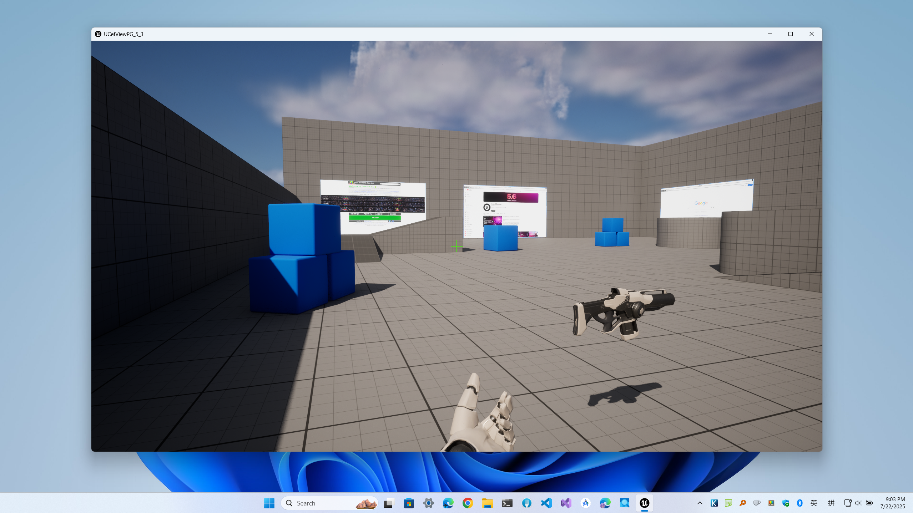
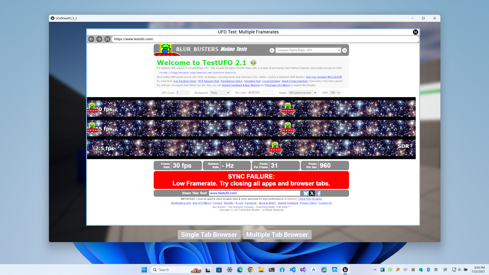
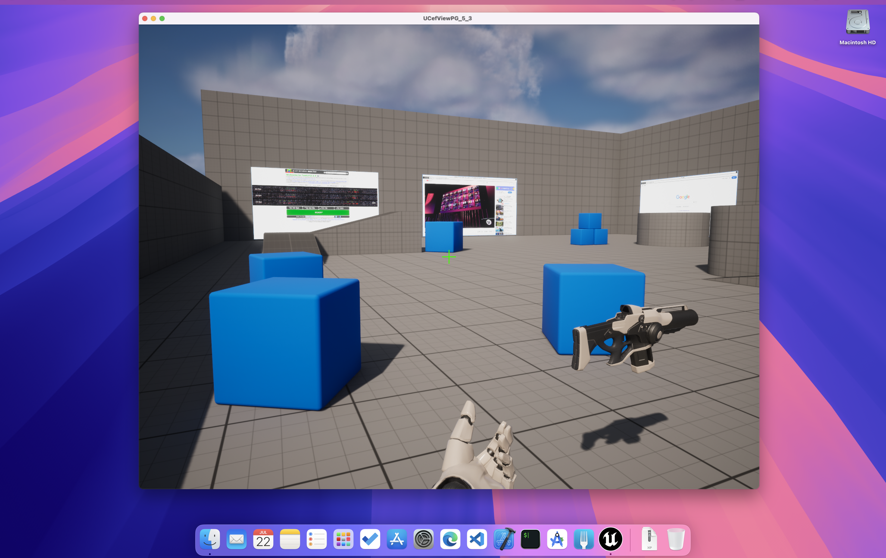
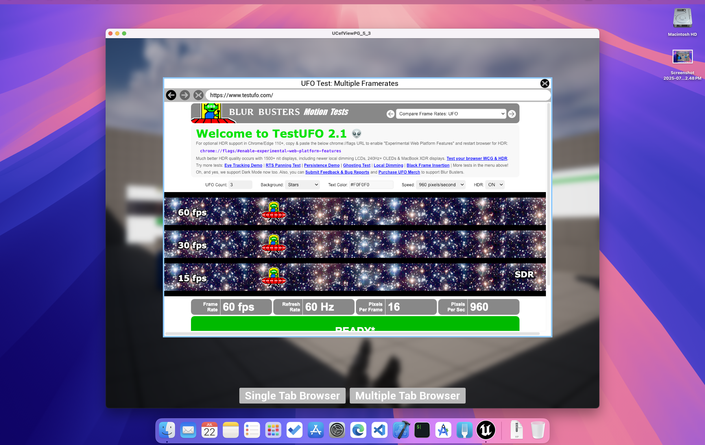
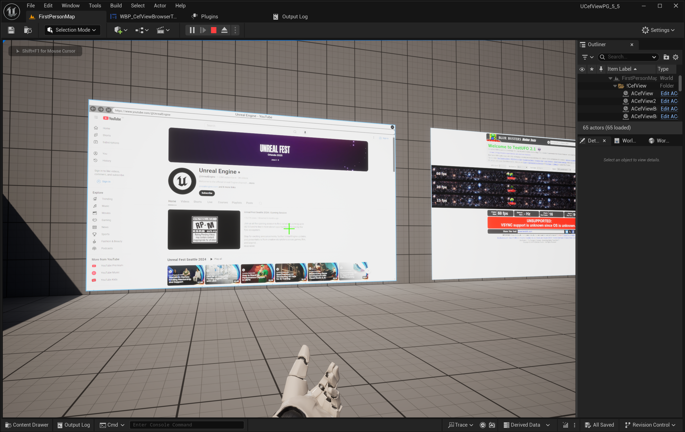
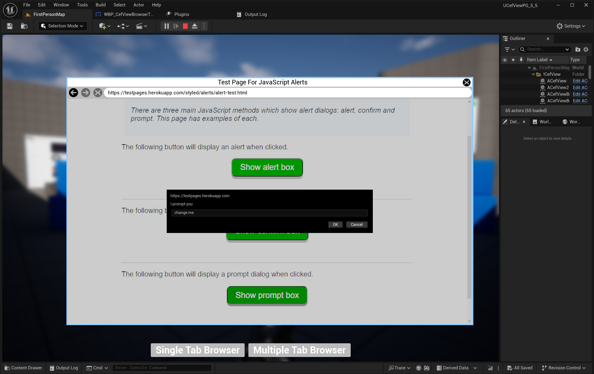

Unreal Engine 高性能 WebView 插件
从 FAB 获取 | GitHub 示例工程
UCefView 将 Chromium Embedded Framework (CEF) 集成到 Unreal Engine 中，提供稳定、高性能的 WebView 组件。它支持 Slate (SCefView) 和 UMG (UCefView) 两种使用方式，提供硬件加速渲染、跨平台集成能力以及灵活的 JavaScript 互操作桥接。
XCef SDK 与插件分开安装。在 Project Settings > Engine > UCefView Settings > XCef SDK 安装并选择兼容包，重启 Editor 即可加载。Editor 和 PIE 复用用户共享安装，Live Coding 不复制 SDK；打包游戏自带目标运行文件。详见 快速开始 和 XCef SDK 管理 。
CEF 在独立的 XCefHost 中运行，可以与引擎内置 Web Browser 共存。当前 SDK 集成支持 Windows x64、macOS x86_64/arm64 和 Linux x64。
- 支持的 Unreal Engine 版本：
| 5.0 | 5.1 | 5.2 | 5.3 | 5.4 | 5.5 | 5.6 | 5.7 | 5.8 |
| ✅ | ✅ | ✅ | ✅ | ✅ | ✅ | ✅ | ✅ | ✅ |
- 支持的目标平台与架构：
| 平台 | 架构 |
| 支持 | Windows | x86_64 |
| 支持 | macOS | x86_64 & Arm64 |
| 支持 | Linux | x86_64 |
- 警告
- Linux 平台当前仍处于实验状态，仅在 headless 模式下验证。
- 支持的 RHI 与数据传输方式：
| RHI | 数据传输 |
| 支持 | DirectX 11 | Shared Texture |
| 支持 | DirectX 12 | Shared Texture |
| 支持 | Metal | Shared Texture |
| 支持 | Vulkan | Pixel Buffer |
- 支持的开发平台：
| 平台 | 版本 |
| 支持 | Windows | 取决于所选 Unreal Engine 和 XCef/CEF SDK |
| 支持 | macOS | 取决于所选 Unreal Engine 和 XCef/CEF SDK |
| 支持 | Linux | 取决于所选 Unreal Engine 和 XCef/CEF SDK |
游戏内与 UI 示例
Windows 游戏内
 | Windows 菜单
 |
macOS 游戏内
 | macOS 菜单
 |
使用场景


